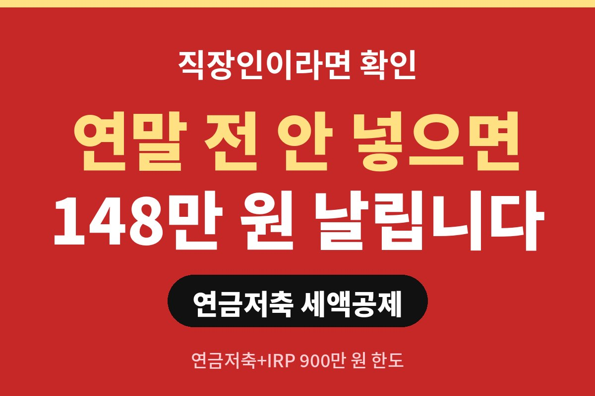
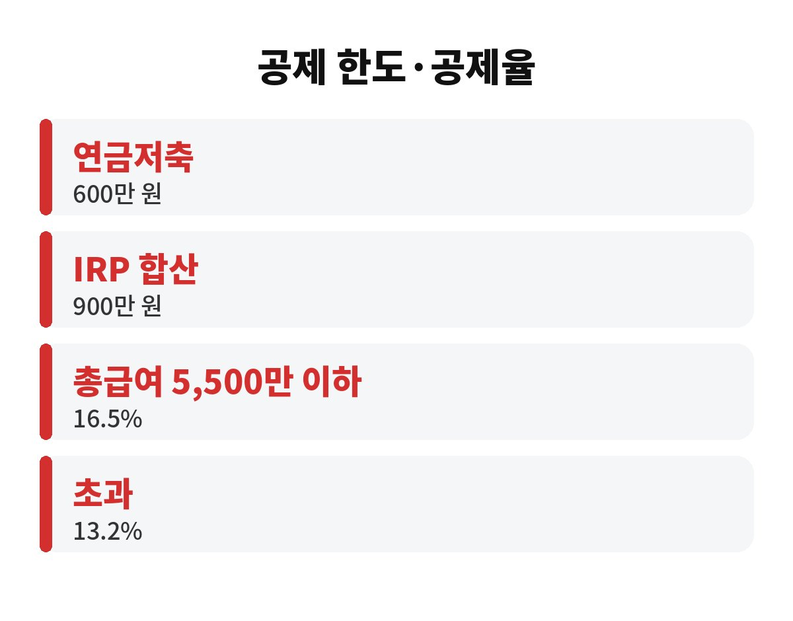
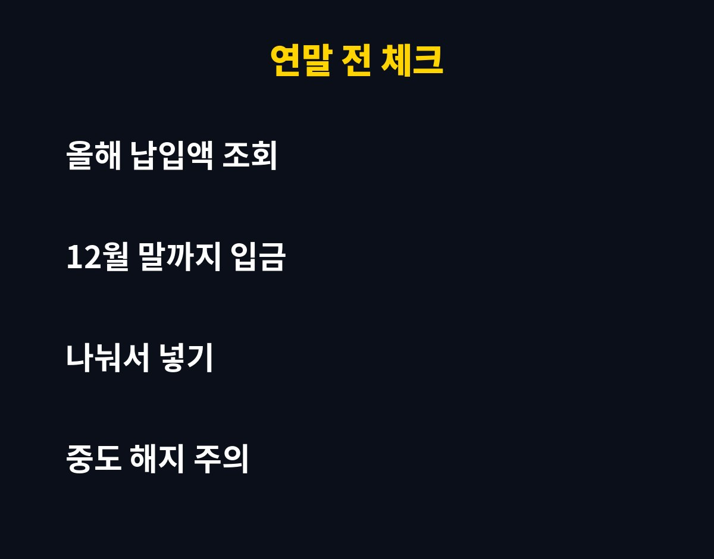

연금저축 세액공제는 연금저축과 IRP를 합쳐 연 900만 원까지 넣으면 최대 148만 5천 원을 세금에서 돌려받는 제도예요. 연말정산을 앞둔 직장인이라면 올해 내 한도를 얼마나 채웠는지 지금 확인해 보고 싶지 않으세요?
연말정산은 12월에 몰아서 챙기면 늦는 경우가 많아요. 특히 연금저축 세액공제는 12월 31일까지 입금이 끝나야 올해 몫으로 인정되기 때문에, 10월 말인 지금이 계획을 세우기 딱 좋은 때입니다. 남은 두 달 동안 어떻게 채우면 좋을지 차근차근 볼게요.
연금저축만 넣을 때는 연 600만 원까지 공제 대상이에요. 여기에 IRP(개인형 퇴직연금)를 함께 넣으면 합산 최대 900만 원까지 인정됩니다. 즉 연금저축으로 600만 원을 채웠다면 IRP에 300만 원을 더 넣는 구조예요.
이미 퇴직연금에 가입돼 있거나 회사가 IRP 계좌를 운영하는 경우도 있으니, 내 계좌 현황은 가입한 금융사 앱에서 올해 납입액을 먼저 조회해 보세요. 생각보다 많이 넣어 두었거나, 반대로 한참 모자란 경우가 많거든요.

공제율은 소득에 따라 달라져요. 일반적으로 총급여 5,500만 원 이하(종합소득금액 4,500만 원 이하)라면 16.5%, 그보다 높으면 13.2%를 적용합니다. 지방소득세를 포함한 숫자예요.
계산해 볼까요? 900만 원 × 16.5%는 148만 5천 원, 900만 원 × 13.2%는 118만 8천 원이에요. 연금저축만 600만 원 넣었다면 16.5% 구간은 99만 원, 13.2% 구간은 79만 2천 원이 됩니다. 같은 돈을 넣어도 구간에 따라 환급액이 이렇게 달라져요.
| 구분 | 납입액 | 16.5% 구간 | 13.2% 구간 |
| 연금저축만 | 600만 원 | 99만 원 | 79만 2천 원 |
| 연금저축+IRP | 900만 원 | 148만 5천 원 | 118만 8천 원 |
결론부터 말하면 연말에 한 번에 넣어도 세액공제는 받을 수 있어요. 공제는 그해 안에 납입했느냐가 기준이니까요. 다만 한꺼번에 큰돈을 넣으려면 현금 흐름이 부담돼서 12월에 포기하는 분이 많습니다. 그래서 남은 금액을 두세 번으로 나눠 넣는 방법을 추천해요.
예를 들어 올해 아직 300만 원이 모자라다면 11월과 12월에 150만 원씩 나눠 보세요. 보너스나 성과급이 들어오는 달에 맞추면 부담이 훨씬 줄어듭니다. 또 입금일이 12월 마지막 영업일을 넘기면 내년으로 넘어갈 수 있으니, 마감 며칠 전에는 꼭 마무리하세요.

가장 중요한 건 이 돈이 노후 자금이라는 점이에요. 세액공제를 받은 대신 만 55세 이후 연금으로 나눠 받는 것이 원칙이고, 중간에 해지하면 기타소득세 16.5%가 붙어 오히려 손해를 볼 수 있습니다. 당장 쓸 돈까지 무리해서 넣지는 마세요.
또 세액공제는 내가 낸 세금이 있어야 받을 수 있어요. 결정세액이 적은 분은 공제를 다 못 받을 수 있으니, 연말정산 미리보기 서비스로 올해 예상 환급액을 먼저 계산해 보는 게 좋습니다. 그 결과를 보고 얼마나 더 넣을지 정하면 헛돈 쓸 일이 없어요.
마지막으로 세법 기준은 해마다 바뀔 수 있어요. 올해 한도와 공제율은 국세청 안내로 한 번 더 확인하고, 가입한 금융사의 납입 증명서도 미리 챙겨 두세요. 서류는 보통 1월 초 간소화 서비스에서 자동으로 조회되니 따로 걱정하지 않아도 됩니다.
한 가지 더 알아 둘 게 있어요. 연금저축은 은행, 증권사, 보험사에서 모두 가입할 수 있는데, 상품에 따라 수수료와 운용 방식이 꽤 달라요. 이미 가입한 계좌가 있다면 새로 만들기보다 같은 계좌에 추가 납입하는 것이 관리하기 편합니다. 부부가 모두 소득이 있다면 각자 한도를 따로 채울 수 있으니, 배우자 몫도 함께 점검해 보세요. 가족 단위로 챙기면 환급액이 눈에 띄게 달라집니다.
또 연금저축 세액공제는 내가 직접 증빙을 내지 않아도 연말정산 간소화 서비스에 자동으로 잡히는 편이라 부담이 적어요. 그래도 연말에 금융사 앱에서 납입 내역이 정상 반영됐는지 확인하는 습관을 들이면 혹시 모를 누락을 막을 수 있습니다.
정리하면 연금저축 세액공제는 연금저축 600만 원, IRP 포함 900만 원까지 넣어 최대 148만 5천 원을 돌려받는 제도예요. 여러분은 올해 한도, 얼마나 채우셨나요? 도움이 됐다면 구독과 공감 부탁드려요.
※ 본 글은 일반적인 정보 제공이며 투자 권유가 아닙니다. 세법 기준은 변경될 수 있으니 국세청 안내를 확인하세요.